Total de Registros (dataset original)
116,945
Registros con datos completos
79,488
Registros protegidos
37,460
Periodo cubierto
1968 – 2023
Este dashboard presenta el análisis exploratorio del dataset RNPDNO-22-08-2023.csv, publicado por la Comisión Nacional de Búsqueda de Personas (CNB) de la Secretaría de Gobernación.
El dataset contiene ~37,460 registros protegidos (etiquetados como ELIMINADO), correspondientes a casos cuya identidad fue resguardada conforme a la Ley General de Protección de Datos Personales en Posesión de Sujetos Obligados. Estos registros no son errores — representan casos reales y se documentan como una limitación estructural del análisis.
| Sección | Contenido |
|---|---|
| I. Metodología | Empresa y metodología de Minería de Datos por integrante |
| II. Objetivo | Preguntas de análisis y criterios de éxito |
| III. Dataset | Descripción, diccionario, limpieza y normalización |
| IV. CRISP-DM | Aplicación de la metodología al caso |
| V. EDA | Medidas descriptivas y visualizaciones |
| VI. Correlación | Matriz de correlación (heatmap) |
| VII. Hallazgos | 8 hallazgos principales con evidencia gráfica |
| VIII. Limitaciones | Calidad, sesgos, variables faltantes |
| IX. Conclusión | Síntesis y perspectivas futuras |
BBVA es una de las instituciones financieras más grandes de España y América Latina, con presencia activa en México. Su área de datos, BBVA Data & Analytics (D&A), ha documentado públicamente su enfoque metodológico para proyectos de minería de datos.
En BBVA D&A los proyectos heredan características de CRISP-DM, pero no lo aplican de forma rígida. Con sus proyectos aumentando en número y diversidad, el equipo desarrolló un flujo de trabajo integral propio para encajar mejor en prácticas ágiles.
| Categoría | Herramienta |
|---|---|
| Data Discovery | Amundsen |
| Exploración | TensorFlow Data Validation, InspectDF |
| Features | FeatureTOOLS, Ludwig, client2vec |
Fuente: José Antonio Rodríguez Serrano. Acelerar el flujo de trabajo en Ciencia de Datos. BBVA AI Factory, mayo 2025.
Netflix es una plataforma de entretenimiento con más de 300 millones de suscriptores. Su enfoque se distingue por estar centrado en la experimentación continua.
A diferencia de metodologías estándar como CRISP-DM, Netflix desarrolló su propio proceso iterativo basado en el método científico. Los científicos de datos participan en todo el ciclo de vida del proyecto:
El pilar técnico central es su plataforma de experimentación propia ABlaze, que soporta más de 3,000 proyectos de IA y ML, ejecutando cientos de millones de trabajos de cómputo y gestionando decenas de petabytes de modelos y artefactos.
Fuente: Martin Tingley et al. Experimentation is a major focus of Data Science across Netflix. Netflix Tech Blog, enero 2022.
Google es pionera en el uso de machine learning a escala masiva. Su metodología reconoce que los proyectos de ML son fundamentalmente distintos a los proyectos de software tradicionales — no lineales y con grados variables de incertidumbre.
En lugar de un plan rígido, Google promueve una mentalidad experimental documentada en Rules of Machine Learning, que organiza el desarrollo en tres fases:
| Fase | Descripción |
|---|---|
| 1. Infraestructura | Construcción de pipeline y primeros modelos |
| 2. Iteración | Lanzamiento, nuevas características, evaluación de modelos |
| 3. Optimización | Mejoras avanzadas al alcanzar plateau de rendimiento |
A nivel de infraestructura, Google centraliza sus proyectos en Vertex AI, plataforma unificada que combina BigQuery con herramientas de MLOps.
Fuente: Google Developers. Planificación de proyectos de AA. https://developers.google.com/machine-learning/managing-ml-projects/planning?hl=es-419
El presente reporte tiene como objetivo analizar el dataset RNPDNO-22-08-2023.csv, publicado por la Comisión Nacional de Búsqueda de Personas (CNB), con la finalidad de identificar patrones temporales, geográficos y demográficos en los registros de personas desaparecidas y no localizadas en México. Los hallazgos están orientados a apoyar la toma de decisiones en materia de política pública y estrategias de búsqueda.
El análisis se considerará exitoso si: (a) se identifican al menos 8 hallazgos sustentados con evidencia gráfica o tabular, (b) el dataset limpio presenta consistencia interna verificable, y (c) los resultados pueden ser comprendidos por tomadores de decisiones sin formación técnica.
El dataset utilizado es el Registro Nacional de Personas Desaparecidas y No Localizadas (RNPDNO). En su estado original contiene 116,945 filas y 11 columnas, donde cada fila representa un reporte de desaparición de una persona.
Una misma persona puede tener más de un reporte. La columna Consecutivo Reportes por Persona actúa como identificador y solo aparece en el primer reporte de cada una. El dataset contiene 110,965 personas únicas distribuidas en 116,945 reportes.
| Característica | Valor |
|---|---|
| Filas (original) | 116,945 |
| Filas (limpio) | 79,488 |
| Columnas | 11 |
| Periodo cubierto | 01/05/1968 al 20/08/2023 |
| Personas únicas | 77,259 |
| Unidad de análisis | Un reporte individual de desaparición |
| Registros protegidos | 37,460 (32.1%) |
| Codificación | ISO-8859-1 (Latin-1) |
| Fuente | Comisión Nacional de Búsqueda de Personas (CNB) |
| Variable | Descripción | Tipo de dato | Tipo estadístico |
|---|---|---|---|
| Consecutivo Reportes por Persona | Identificador de persona. Solo aparece en el primer reporte. | int64 | Numérica discreta |
| Consecutivo Registro | Orden del reporte dentro de los registros de una misma persona. | int64 | Numérica discreta |
| Nombre | Nombre(s) de pila. 5 nulos (0.01%). | string | Categórica nominal |
| Primer Apellido | Primer apellido. 26 nulos (0.03%). | string | Categórica nominal |
| Segundo Apellido | Segundo apellido. 1,449 nulos (1.82%) — dato opcional. | string | Categórica nominal |
| Edad | Edad en años al momento de la desaparición. Rango: 1–100. Media: 31.8 años. 4,626 nulos (5.82%). | float64 | Numérica continua |
| Sexo | HOMBRE (75.6%), MUJER (23.6%), INDETERMINADO (0.8%). Sin nulos. | string | Categórica nominal |
| Nacionalidad | Nacionalidad. MEXICANA (87.01%). 2 nulos. | string | Categórica nominal |
| Fecha de desaparición | Fecha del evento. Rango: 1968–2023. 56,085 nulos (70.56%) MNAR. | datetime64 | Numérica continua |
| Entidad de desaparición | Estado de la República. 32 valores. Sin nulos. Más frecuente: Tamaulipas (14.2%). | string | Categórica nominal |
| Autoridad que reportó | Institución que generó el reporte. Alta cardinalidad. Sin nulos. | string | Categórica nominal |
Consecutivo Reportes por Persona: Presentaba 5,980 nulos. Se aplicó forward fill para propagar el identificador hacia los reportes adicionales.
Registros ELIMINADO: Se identificaron 37,460 filas con datos protegidos (MNAR). Se eliminaron del dataset. El dataset quedó con 79,488 filas.
Fecha de desaparición: Con 70.56% de faltantes MNAR, no se imputó por tres motivos: (1) cualquier método estaría inventando la mayoría de la columna; (2) los métodos estándar (KNN, imputación múltiple) asumen MAR, condición que no se cumple; (3) imputar con media/mediana introduciría sesgo grave en los análisis temporales.
Edad: 11 registros con valores > 100 años (máximo: 1,832) y 240 con valor = 0. Los 251 errores de captura fueron reemplazados por NaN. Rango válido: 1–100 años.
| Columna | Nulos | % | Justificación |
|---|---|---|---|
| Segundo Apellido | 1,449 | 1.82% | Dato opcional |
| Edad | 4,626 | 5.82% | No registrado en el reporte |
| Fecha de desaparición | 56,085 | 70.56% | MNAR — ausencia estructural |
Todas las columnas de texto fueron convertidas a mayúsculas y se eliminaron espacios en blanco al inicio y al final de cada valor.
| Valor original | Valor corregido | Registros |
|---|---|---|
| HONDUREÑAO | HONDUREÑA | 326 → unificados con 21 existentes = 347 total |
| SALVADORENA | SALVADOREÑA | — |
| BRASILENA | BRASILEÑA | — |
| BELICENA | BELICEÑA | — |
La metodología CRISP-DM se aplicó de forma integral a lo largo de este reporte.
| Fase | Actividades | Sección |
|---|---|---|
| 1. Business Understanding | Objetivo, preguntas y criterios de éxito | Sección II |
| 2. Data Understanding | Descripción, diccionario y EDA | Secciones III, V, VI |
| 3. Data Preparation | Limpieza, conversión y normalización | Secciones III.3, III.4 |
| 4. Modelling | Técnicas sugeridas | Ver tarjeta siguiente |
| 5. Evaluation | Sesgos, limitaciones y calidad de datos | Sección VIII |
| 6. Deployment | Reporte PDF, dashboard Quarto, CSV limpio | Sección IX |
Aunque en este proyecto no se entrenaron modelos predictivos, se identifican las técnicas más adecuadas para un análisis posterior:
Para identificar grupos de entidades con patrones similares de desaparición por edad, sexo y frecuencia temporal.
Para modelar la tendencia de reportes anuales y proyectar el comportamiento futuro, incorporando los efectos de cambios institucionales.
Si se dispusiera de la variable localizado/no localizado, podría predecirse el probable resultado de una búsqueda en función del perfil demográfico y geográfico del caso.
(array([ 906., 622., 678., 499., 1624., 3325., 6267., 3718., 6737.,
4452., 6626., 4200., 5793., 3493., 4885., 2822., 3687., 2128.,
2707., 1494., 1251., 1454., 830., 1044., 536., 651., 350.,
454., 264., 341., 225., 250., 149., 154., 80., 72.,
38., 32., 12., 12.]),
array([ 1. , 3.475, 5.95 , 8.425, 10.9 , 13.375, 15.85 ,
18.325, 20.8 , 23.275, 25.75 , 28.225, 30.7 , 33.175,
35.65 , 38.125, 40.6 , 43.075, 45.55 , 48.025, 50.5 ,
52.975, 55.45 , 57.925, 60.4 , 62.875, 65.35 , 67.825,
70.3 , 72.775, 75.25 , 77.725, 80.2 , 82.675, 85.15 ,
87.625, 90.1 , 92.575, 95.05 , 97.525, 100. ]),
<BarContainer object of 40 artists>)Text(0.5, 1.0, 'Distribución de Edades al Momento de la Desaparición')Text(0.5, 0, 'Edad (años)')Text(0, 0.5, 'Número de registros')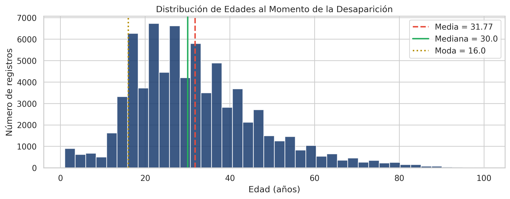
{'whiskers': [<matplotlib.lines.Line2D at 0x7efde9aefb30>,
<matplotlib.lines.Line2D at 0x7efde9b4df10>],
'caps': [<matplotlib.lines.Line2D at 0x7efde9b4e210>,
<matplotlib.lines.Line2D at 0x7efde9b4e540>],
'boxes': [<matplotlib.patches.PathPatch at 0x7efde9b4db50>],
'medians': [<matplotlib.lines.Line2D at 0x7efde9b4e810>],
'fliers': [<matplotlib.lines.Line2D at 0x7efde9b4eb10>],
'means': []}Text(0.5, 1.0, 'Boxplot de Edad')Text(0.5, 0, 'Edad (años)')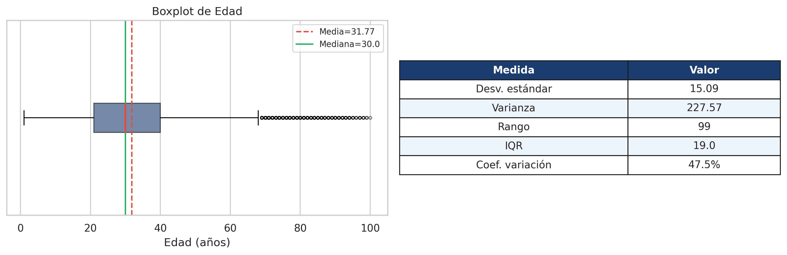
Text(0.0, 0.901, '0.851')Text(1.0, 0.7725000000000001, '0.7225')Text(2.0, 4.3603, '4.3103')Text(0.5, 1.0, 'Entropía de Shannon por Variable')Text(0, 0.5, 'Entropía (bits)')([<matplotlib.patches.Wedge at 0x7efde99b3050>,
<matplotlib.patches.Wedge at 0x7efde99941d0>,
<matplotlib.patches.Wedge at 0x7efde9a02510>],
[Text(-0.7627344801067345, -0.7926134700194728, 'HOMBRE'),
Text(0.781803525578918, 0.7738108602186804, 'MUJER'),
Text(0.026777445350832107, 1.0996740282558661, 'INDETERMINADO')],
[Text(-0.41603698914912784, -0.43233462001062145, '75.6%'),
Text(0.4264382866794098, 0.42207865102837105, '23.6%'),
Text(0.014605879282272057, 0.5998221972304724, '0.8%')])Text(0.5, 1.0, 'Distribución por Sexo')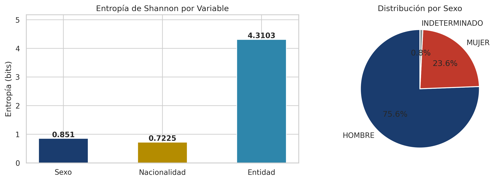
Text(0.5, 1.0, 'Curva de Lorenz — Registros por Entidad')Text(0.5, 0, 'Proporción acumulada de entidades')Text(0, 0.5, 'Proporción acumulada de registros')([<matplotlib.patches.Wedge at 0x7efde9a2b6b0>,
<matplotlib.patches.Wedge at 0x7efde9a8b110>],
[Text(-1.0871513404266344, 0.16763640120383197, 'Top 5 entidades\n(35,873)'),
Text(1.0871513950494496, -0.16763604696495274, 'Resto\n(43,615)')],
[Text(-0.5929916402327097, 0.09143803702027196, '45.1%'),
Text(0.5929916700269724, -0.09143784379906512, '54.9%')])Text(0.5, 1.0, 'Concentración: Top 5 vs. Resto')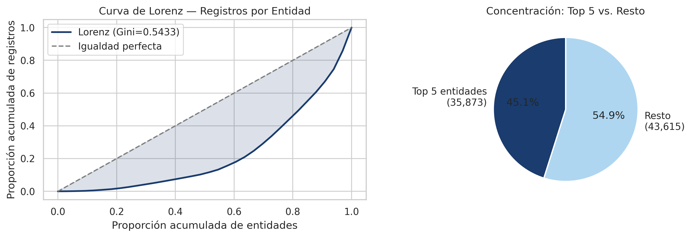
Text(0.5, 1.0, 'Matriz de Correlación — Variables Numéricas')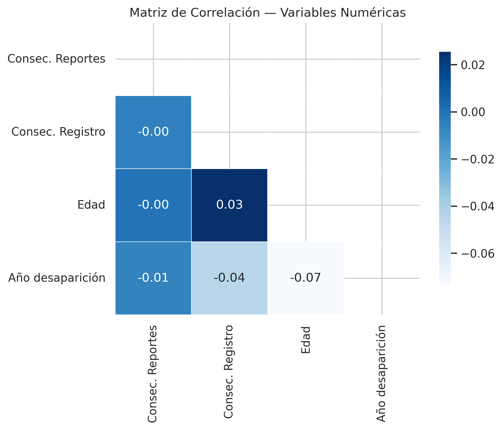
| Par de variables | r | Interpretación |
|---|---|---|
| Consec. Reportes – Consec. Registro | -0.00 | Sin relación lineal |
| Consec. Reportes – Edad | -0.00 | Sin relación lineal |
| Consec. Reportes – Año desap. | -0.01 | Sin relación lineal |
| Consec. Registro – Edad | 0.03 | Correlación muy débil |
| Consec. Registro – Año desap. | -0.04 | Correlación muy débil |
| Edad – Año desap. | -0.07 | Correlación más notable (aún muy débil) |
La matriz revela que no existe ninguna correlación lineal relevante entre las variables numéricas. La ausencia de correlaciones fuertes sugiere que cada variable aporta información independiente. Un análisis multivariado más profundo requeriría incorporar las variables categóricas mediante codificación adecuada.
Text(3781, 0, '3,731')Text(4088, 1, '4,038')Text(4213, 2, '4,163')Text(4219, 3, '4,169')Text(4532, 4, '4,482')Text(4566, 5, '4,516')Text(5197, 6, '5,147')Text(6072, 7, '6,022')Text(8950, 8, '8,900')Text(11338, 9, '11,288')Text(0.5, 1.0, 'Top 10 Entidades con Mayor Número de Reportes')Text(0.5, 0, 'Número de registros')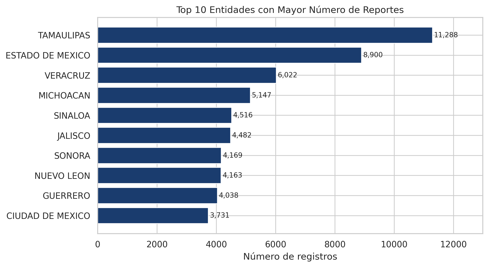
([<matplotlib.patches.Wedge at 0x7efde9866630>,
<matplotlib.patches.Wedge at 0x7efde97a4560>,
<matplotlib.patches.Wedge at 0x7efde969c890>],
[Text(-0.7627344801067345, -0.7926134700194728, 'HOMBRE'),
Text(0.781803525578918, 0.7738108602186804, 'MUJER'),
Text(0.026777445350832107, 1.0996740282558661, 'INDETERMINADO')],
[Text(-0.41603698914912784, -0.43233462001062145, '75.6%'),
Text(0.4264382866794098, 0.42207865102837105, '23.6%'),
Text(0.014605879282272057, 0.5998221972304724, '0.8%')])Text(0.5, 1.0, 'Distribución por Sexo')Text(0, 60302, '60,102')Text(1, 18970, '18,770')Text(2, 816, '616')Text(0.5, 1.0, 'Registros por Sexo')Text(0, 0.5, 'Número de registros')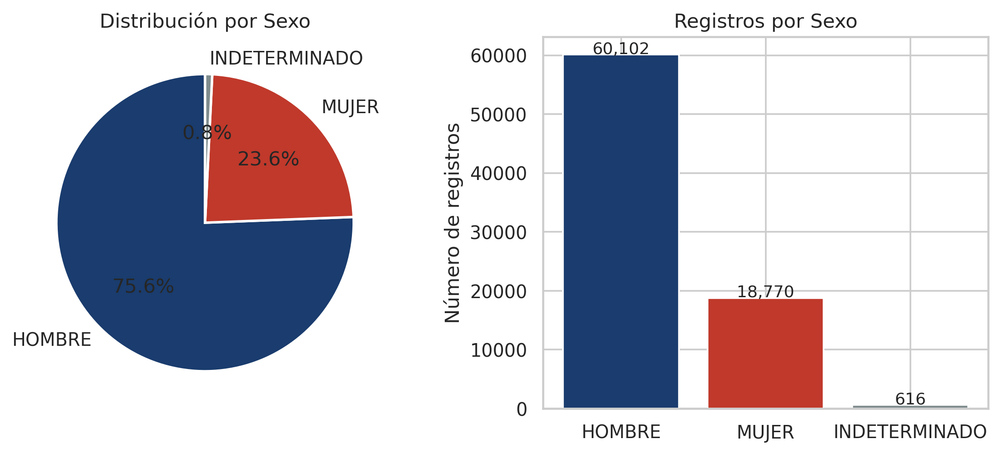
Text(0.5, 1.0, 'Edades (rango 15–30 resaltado)')Text(0.5, 0, 'Edad (años)')Text(0, 0.5, 'Registros')Text(0.0, 3149, '2,999')Text(1.0, 9212, '9,062')Text(2.0, 25516, '25,366')Text(3.0, 33621, '33,471')Text(4.0, 4114, '3,964')Text(0.5, 1.0, 'Registros por Rango de Edad')Text(0.5, 0, 'Rango de edad')Text(0, 0.5, 'Registros')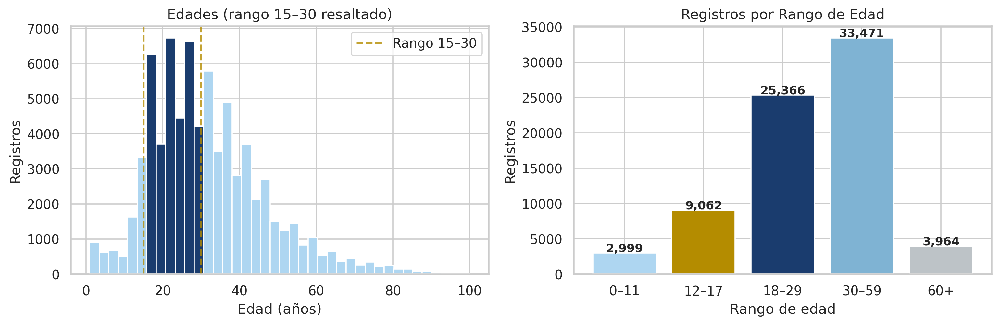
Text(0.5, 1.0, 'Reportes de Desaparición por Año (2000–2023)')Text(0.5, 0, 'Año')Text(0, 0.5, 'Número de registros')(array([1998., 2000., 2002., 2004., 2006., 2008., 2010., 2012., 2014.,
2016., 2018., 2020., 2022., 2024., 2026.]),
[Text(1998.0, 0, '1998'),
Text(2000.0, 0, '2000'),
Text(2002.0, 0, '2002'),
Text(2004.0, 0, '2004'),
Text(2006.0, 0, '2006'),
Text(2008.0, 0, '2008'),
Text(2010.0, 0, '2010'),
Text(2012.0, 0, '2012'),
Text(2014.0, 0, '2014'),
Text(2016.0, 0, '2016'),
Text(2018.0, 0, '2018'),
Text(2020.0, 0, '2020'),
Text(2022.0, 0, '2022'),
Text(2024.0, 0, '2024'),
Text(2026.0, 0, '2026')])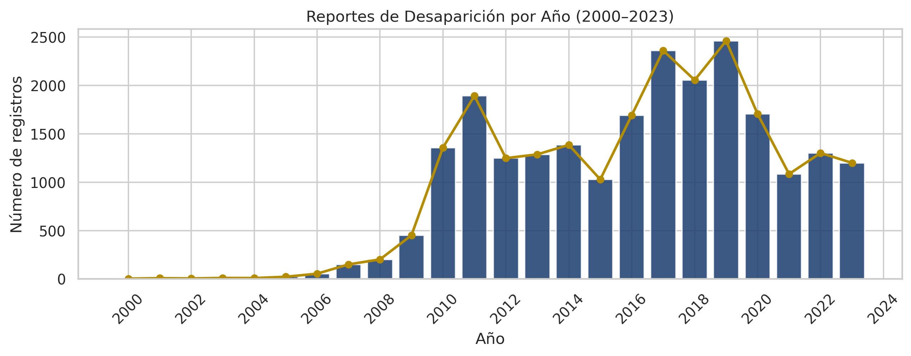
Text(3185, 0, '3,155')Text(3539, 1, '3,509')Text(3563, 2, '3,533')Text(3579, 3, '3,549')Text(3752, 4, '3,722')Text(3905, 5, '3,875')Text(4002, 6, '3,972')Text(4284, 7, '4,254')Text(6268, 8, '6,238')Text(10351, 9, '10,321')Text(0.5, 1.0, 'Top 10 Autoridades con Mayor Número de Reportes')Text(0.5, 0, 'Número de registros')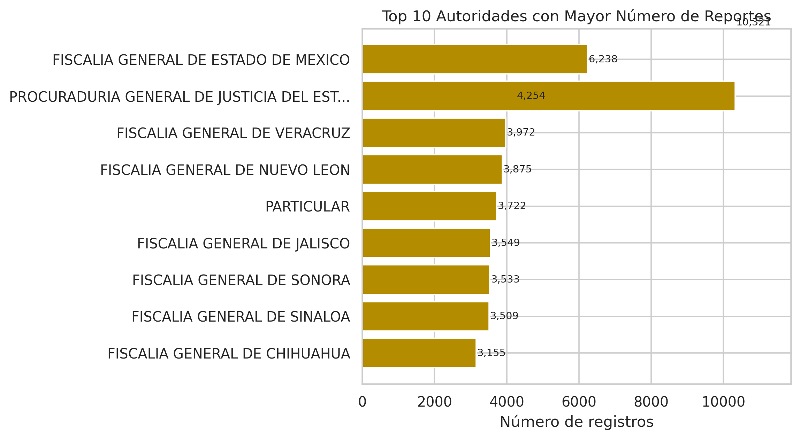
Text(0.0, 69316, '69,166')Text(1.0, 8669, '8,519')Text(2.0, 563, '413')Text(3.0, 497, '347')Text(4.0, 457, '307')Text(5.0, 319, '169')Text(6.0, 297, '147')Text(7.0, 226, '76')Text(0.5, 1.0, 'Top 8 Nacionalidades en los Registros')Text(0, 0.5, 'Número de registros')([0, 1, 2, 3, 4, 5, 6, 7],
[Text(0, 0, 'MEXICANA'),
Text(1, 0, 'SE DESCONOCE'),
Text(2, 0, 'ESTADOUNIDENSE'),
Text(3, 0, 'HONDUREÑA'),
Text(4, 0, 'GUATEMALTECA'),
Text(5, 0, 'COLOMBIANA'),
Text(6, 0, 'SALVADOREÑA'),
Text(7, 0, 'NICARAGUENSE')])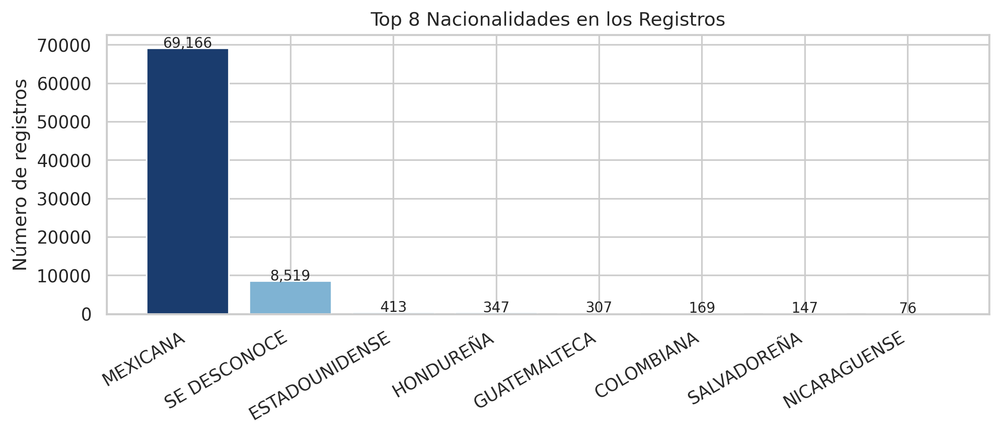
([<matplotlib.patches.Wedge at 0x7efde93da120>,
<matplotlib.patches.Wedge at 0x7efde93f4620>],
[Text(-0.9293401731855903, -0.5884954056773744, 'Registros con datos\ncompletos (67.9%)'),
Text(0.9293401217376823, 0.5884954869228736, 'Registros protegidos\n(32.1%)')],
[Text(-0.5069128217375947, -0.3209974940058405, '68.0%'),
Text(0.5069127936750993, 0.32099753832156736, '32.0%')])Text(0.5, 1.0, 'Proporción de Registros Protegidos vs. Completos')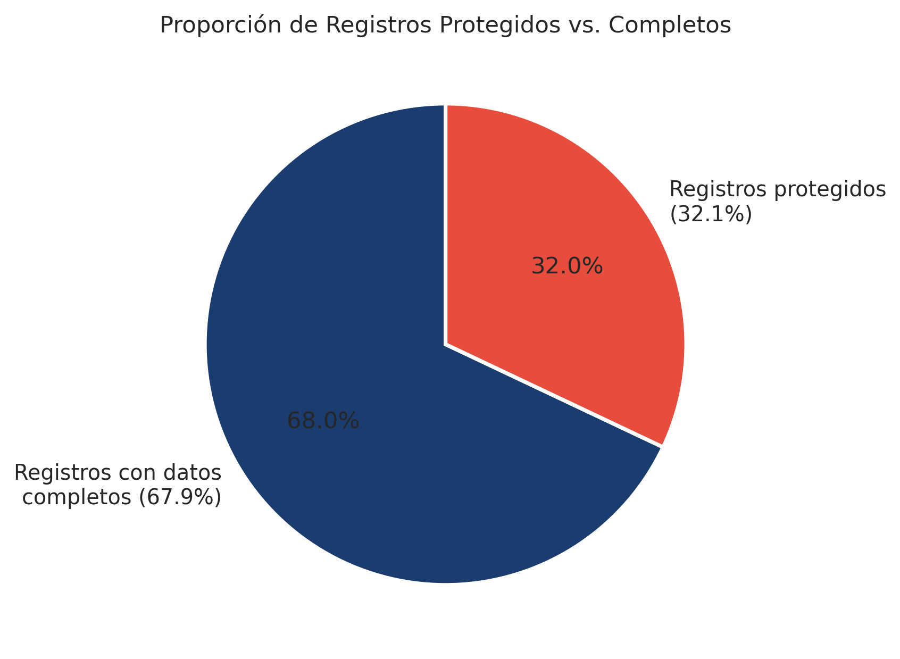
{'whiskers': [<matplotlib.lines.Line2D at 0x7efde93f7e00>,
<matplotlib.lines.Line2D at 0x7efde92872c0>],
'caps': [<matplotlib.lines.Line2D at 0x7efde9287590>,
<matplotlib.lines.Line2D at 0x7efde9287860>],
'boxes': [<matplotlib.patches.PathPatch at 0x7efde9568170>],
'medians': [<matplotlib.lines.Line2D at 0x7efde9287b60>],
'fliers': [<matplotlib.lines.Line2D at 0x7efde9287e90>],
'means': []}Text(0.5, 1.0, 'Boxplot de Edad al Momento de la Desaparición')Text(0.5, 0, 'Edad (años)')Text(0.5, 1.0, 'Resumen de Variabilidad — Edad')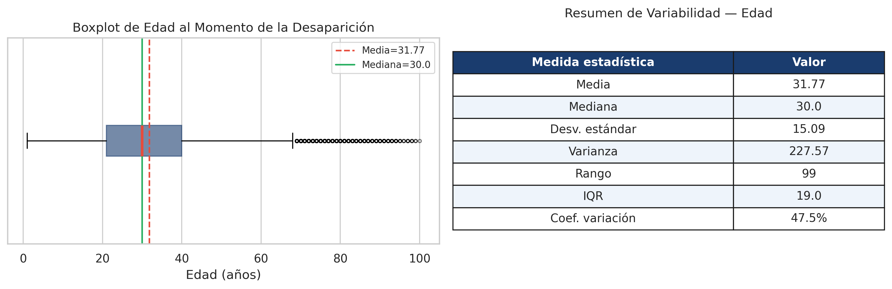
La columna Fecha de desaparición concentra la mayor problemática: 56,085 valores nulos (70.56%) de tipo MNAR. Los análisis temporales se realizaron únicamente sobre los 23,403 registros con fecha válida, limitando la representatividad histórica.
La columna Edad presentaba 11 registros con valores > 100 años (máximo: 1,832) y 240 con valor = 0. Los 251 errores de captura fueron reemplazados por NaN.
Subregistro: Una proporción significativa de desapariciones nunca llega a ser reportada (desconfianza institucional, miedo, desconocimiento de mecanismos de denuncia).
Sesgo por registros protegidos: El 32.1% de registros eliminados impide generalizar hallazgos demográficos al total de casos.
Heterogeneidad institucional: Múltiples autoridades con distintos criterios introducen inconsistencias en categorías como entidad, autoridad y nacionalidad.
Subregistro de mujeres: Las desapariciones de mujeres pueden estar subregistradas por patrones culturales, particularmente en casos de violencia de género o trata.
El dataset público contiene únicamente 11 de las 450 variables del RNPDNO completo. Variables ausentes clave:
| Decisión | Justificación |
|---|---|
| Eliminar 37,460 registros ELIMINADO | No contienen información utilizable (MNAR) |
| No imputar Fecha de desaparición | 70.56% faltantes MNAR — imputación introduciría sesgo grave |
| Reemplazar edades fuera de rango por NaN | Errores de captura sin forma de recuperar el dato real |
| Forward fill en Consecutivo Reportes | Propagar identificador a reportes adicionales |
| Corregir 4 variantes ortográficas en Nacionalidad | Homologar etiquetas equivalentes |
| Conservar 373 registros con fechas < 1990 | Históricamente válidos (guerra sucia, 1970s) |
El análisis exploratorio del dataset RNPDNO-22-08-2023.csv permitió identificar patrones claros en el fenómeno de las desapariciones en México a partir de 79,488 registros con datos utilizables.
Las desapariciones no se distribuyen de forma uniforme. Tamaulipas concentra 11,288 casos, seguido por Estado de México (8,900) y Veracruz (6,022). El coeficiente de Gini de 0.54 confirma una concentración moderada-alta en pocas entidades, con implicaciones directas para la asignación de recursos de búsqueda.
Los hombres jóvenes son el grupo más afectado: 75.6% de los registros son hombres y los jóvenes de 15–30 años representan el 45.4% del total. La moda de 16 años señala que la adolescencia tardía es el punto de mayor frecuencia.
La distribución presenta sesgo positivo (a la derecha) — Moda (16) < Mediana (30) < Media (31.77) — lo que indica que la mediana e IQR son medidas más representativas que la media y la desviación estándar para describir este conjunto de datos.
Incremento sostenido desde 2006, con pico en 2019 (2,462 casos). Las fiscalías estatales concentran la mayoría de reportes, subrayando la importancia de fortalecer capacidades institucionales a nivel local.
Este análisis sienta las bases para estudios más profundos con las 450 variables del registro completo, modelos de series de tiempo y análisis geoespaciales a nivel municipal. La disponibilidad de datos abiertos es un paso fundamental hacia la transparencia y rendición de cuentas.
Comisión Nacional de Búsqueda de Personas. RNPDNO — Versión Estadística. SEGOB. https://versionpublicarnpdno.segob.gob.mx/Dashboard/ContextoGeneral
Google Developers. Planificación de proyectos de AA. https://developers.google.com/machine-learning/managing-ml-projects/planning?hl=es-419
José Antonio Rodríguez Serrano. Acelerar el flujo de trabajo en Ciencia de Datos. BBVA AI Factory, mayo 2025. https://www.bbvaaifactory.com/es/accelerating-data-science-workflows/
Martin Tingley et al. Experimentation is a major focus of Data Science across Netflix. Netflix Tech Blog, enero 2022. https://netflixtechblog.com/experimentation-is-a-major-focus-of-data-science-across-netflix-f67923f8e985
Observatorio sobre Desaparición e Impunidad en México, UNAM. https://odim.juridicas.unam.mx/
¿A dónde van los desaparecidos? https://adondevanlosdesaparecidos.org/
Archivo General de la Nación. El Ejército Mexicano durante la Guerra Sucia. https://www.gob.mx/agn/articulos/el-ejercito-mexicano-durante-la-guerra-sucia